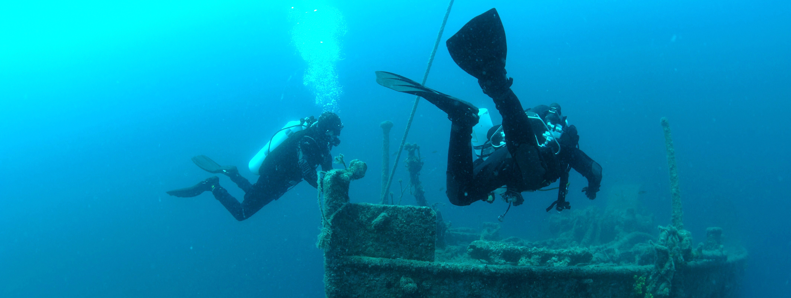

Scire Submarine wreck
A World War II-era Italian submarine that was tragically sunk by a British torpedo in 1942, the Scire sits 33 meters beneath the Mediterranean waters at Haifa Bay. Stumbled upon by chance during archaeological excavators in the mid-1980s, the site, which now functions as a memorial, is a way to explore a bit of history while also observing small species of Mediterranean marine life.